국악 악보 PDF(또는 MusicXML)를 올리면, 가야금·대금·해금 같은 선율과 장구·꽹과리·북 같은 장단을 직접 녹음한 국악기 소리로 함께 연주해 주는 연습 도구입니다. 내 가락을 장단에 맞춰 들어 보거나, 내 줄만 빼고 반주로 틀어 놓고 연습할 수 있습니다. 이 설명서는 실제 화면과 예시 악보로 한 단계씩 따라 할 수 있게 썼습니다.
웹 주소: commst.github.io/scoreworks 2026년 11월 판
차례
1시작하기 전에
할 수 있는 일 · 준비물 · 여는 방법
2화면 둘러보기
위 막대 · 왼쪽 네 칸 · 가운데 · 연주 막대
3따라 하기 ① 총보로 내 파트 연습하기
올리기 → 악기 고르기 → 빠르기 확인 → 재생 → 내 파트 빼고 듣기
4따라 하기 ② 어려운 대목만 반복하기
연습 번호 · 구간 반복 · 반복할 때마다 빠르게
5따라 하기 ③ 빠르기를 못 읽었을 때
노란 칸 채우기 · rit.·accel. 넣기
6따라 하기 ④ 파트보로 장단 연습하기
7따라 하기 ⑤ 음원으로 저장해 휴대폰에서 듣기
8악보로 보기와 음 고치기
9MusicXML로 내보내 악보 프로그램에서 고치기
저장 뒤 확인 · 겹쳐 보기 · 무엇을 어떻게 고치나
10마디맵으로 보기
요약 · 마디 칸 읽기 · 마디 미리보기 · 확인할 마디 찾기
11칸별 기능 자세히
악기 · 빠르기 · 연주 · 저장
12휴대폰·태블릿에서 쓰기
13설정 저장과 다른 기기로 옮기기
14문제가 생겼을 때
15단축키와 알아 둘 점
1. 시작하기 전에
할 수 있는 일
총보 하나를 올리면 악기 줄을 하나하나 읽어, 고른 줄만 함께 연주합니다.
파트보 여러 개(예: 장구·대금·가야금 파트보)를 한꺼번에 올려 합쳐 들을 수 있습니다.
선율 악기는 음높이까지, 타악기는 리듬을 읽어 직접 녹음한 국악기 소리로 냅니다.
연주하는 동안 악보 위에 지금 마디(노란 칸)와 지금 위치(빨간 선)가 따라 움직입니다.
어려운 대목만 반복하거나, 반복할 때마다 조금씩 빨라지게 하거나, MP3·WAV로 저장해 휴대폰에서 들을 수 있습니다.
준비물: 어떤 악보 파일이 되나요
악보 파일
읽기
Finale(2004 이후)에서 PDF로 저장·인쇄한 악보
됩니다. 가장 많이 시험했습니다.
Sibelius, Encore, MuseScore 2에서 만든 PDF
됩니다. 윈도의 'Microsoft PDF로 인쇄'로 만든 Encore 악보도 됩니다.
MuseScore 3·4, Dorico에서 만든 PDF
읽도록 만들었습니다. 안 되면 PDF를 알려 주세요.
MusicXML(.musicxml, .xml, .mxl)
됩니다. 음표를 정확히 담고 있어 PDF보다 정확합니다. 다만 쪽 그림이 없어 '악보로 보기'는 안 됩니다.
종이 악보를 스캔하거나 사진으로 찍은 PDF, jpg·png 그림
안 됩니다. 음표가 그림이라 읽을 수 없습니다.
정간보
안 됩니다.
확인하는 법 PDF를 크게 확대했을 때 음표 가장자리가 계속 선명하면 악보 프로그램으로 만든 PDF(읽을 수 있음)입니다. 확대할수록 흐려지거나 계단처럼 깨지면 스캔한 그림 PDF입니다.
여는 방법
Chrome, Safari, Edge 같은 브라우저에서 commst.github.io/scoreworks 주소를 엽니다. 컴퓨터·태블릿·휴대폰 모두 됩니다.
처음 한 번은 인터넷이 필요합니다(악보 읽는 도구와 악기 소리를 받아 옴). 악보 파일은 인터넷으로 보내지 않고 내 기기 안에서만 처리합니다.
카카오톡·네이버 앱 안에서 링크를 열면 위쪽에 안내가 뜹니다. 브라우저에서 실행을 눌러 Safari나 Chrome으로 여세요. 앱 안의 브라우저에서는 파일 올리기·저장이 잘 안 될 수 있습니다.
처음 연 화면(첫 화면). 아래에 총보·파트보 올리기 상자가 있습니다.
악보 없이 먼저 들어 보기 첫 화면 맨 아래 예시 장단으로 먼저 들어 보기를 누르면 8마디 장구 장단으로 화면을 미리 써 볼 수 있습니다.
2. 화면 둘러보기
악보를 올리면 아래처럼 바뀝니다. 컴퓨터 화면 기준이며, 휴대폰은 12장에서 설명합니다.
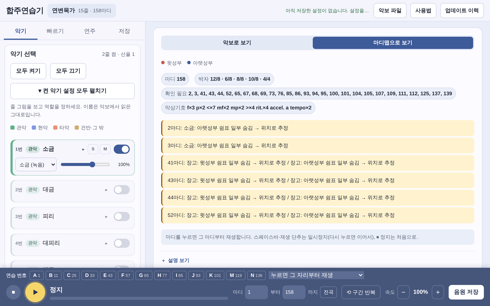
악보를 올린 뒤의 화면(예시: 연변목가 총보 15줄 158마디)
자리
하는 일
위 막대
가운데에 ScoreWorks 이름. 왼쪽에 곡 이름과 줄 수·마디 수, 설정 저장 상태. 오른쪽에 악보(올린 악보 보기·바꾸기), 이력(업데이트 이력), 사용법, 설명서(이 사용설명서 받기), 신고(문제점 신고하기). 아주 넓은 화면에서는 단추에 전체 이름이 나옵니다. 곡 이름을 눌러도 악보 파일 창이 열립니다.
왼쪽 네 칸
악기 줄마다 켜기·끄기, 소리, 음량 빠르기 빠르기 표, rit.·accel., 연습 속도 연주 카운트인·메트로놈 같은 재생 옵션, 소리 다듬기, 연주 순서 저장 음원(MP3·WAV), MIDI·MusicXML, 이 악보의 설정
가운데
악보로 보기: 올린 악보 PDF를 그대로 보여 주고 연주 위치를 따라갑니다. 마디맵으로 보기: 마디마다 리듬을 점으로 보여 줍니다.
아래 연주 막대
늘 보입니다. 연습 번호 단추, ■ 정지(처음으로), ▶ 재생·일시정지, 지금 마디와 시간, 진행 막대, 마디 ○부터 ○까지, ⟲ 구간 반복, 속도 −·+, 음원 저장.
아래 연주 막대. 왼쪽 위 A~N은 악보의 연습 번호이고, 작은 숫자는 그 번호가 시작하는 마디입니다.
처음 쓸 때 기억할 세 가지
무엇을 들을지는 악기, 얼마나 빨리 들을지는 빠르기에서 정합니다.
재생·정지·구간·속도는 언제나 아래 연주 막대에 있습니다.
바꾼 설정은 이 악보에 묶여 자동으로 저장됩니다. 같은 악보를 다시 열면 그대로 돌아옵니다.
3. 따라 하기 ① 총보로 내 파트 연습하기
이번 예시 연변목가 총보(15줄)를 올려, 내 악기인 대금을 장고·가야금과 함께 들어 보고, 이어서 대금만 빼고 반주로 틀어 놓고 불어 봅니다.
3-1. 총보 올리기
첫 화면의 총보 업로드 상자에서 총보 추가를 누르고 총보 PDF를 고릅니다. 또는 파일을 상자 위로 끌어다 놓습니다.
"악보를 읽는 중…"이 나오고, 몇 초 뒤(쪽이 많으면 10초쯤) 화면이 바뀝니다. 위 막대에 연변목가 15줄 · 158마디처럼 나오면 다 읽은 것입니다.
올린 파일은 위 막대의 악보(악보 파일)에서 다시 볼 수 있습니다.
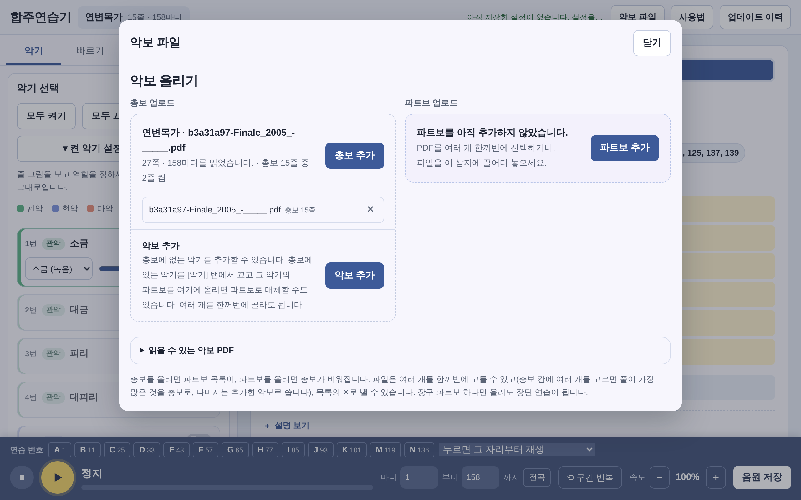
악보 파일 창. 총보, 총보에 더한 악보(악보 추가), 파트보를 보고 ✕로 뺄 수 있습니다.
주의 총보를 올리면 파트보 목록이 비워지고, 파트보를 올리면 총보가 비워집니다. 둘을 함께 쓰려면 3-5의 '악보 추가'를 쓰세요.
3-2. 들을 악기 고르기
왼쪽 악기 칸에 악보의 줄이 위에서부터 차례로 나옵니다. 처음에는 이름을 보고 짐작해 장고 같은 타악 줄과 첫 선율 줄 하나만 켜 둡니다.
대금 줄 오른쪽의 스위치를 눌러 켭니다. 스위치가 파랗게 되면 켜진 것입니다.
같은 방법으로 가야금(윗줄·아랫줄 두 줄이면 둘 다)과 장고를 켭니다.
켠 줄에는 소리 이름과 음량 막대가 바로 보입니다. 장고를 조금 작게 하고 싶으면 장고의 음량 막대를 왼쪽으로 끕니다.
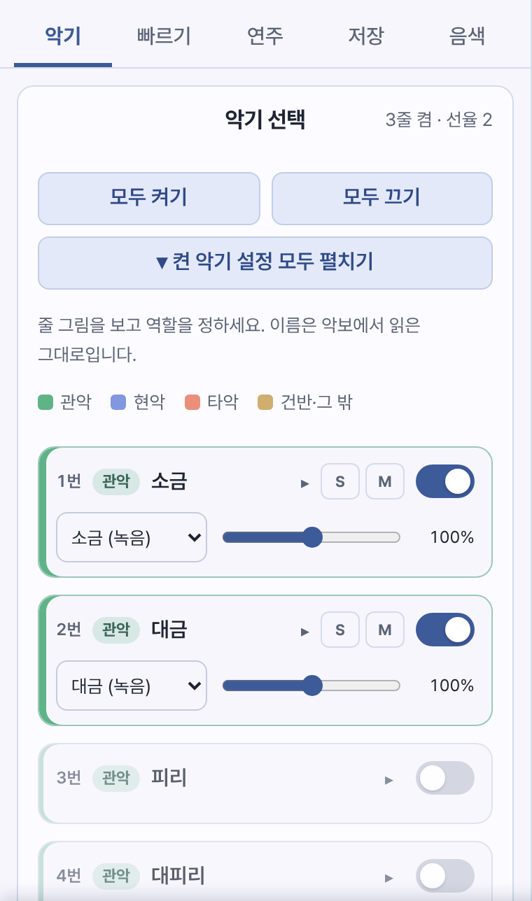
악기 칸. 줄마다 [번호 · 갈래 · 이름 · ▸ · S · M · 켜기 스위치], 켠 줄은 소리와 음량이 한 줄로 보입니다.
줄 이름을 누르면 그 줄이 펼쳐져 자세한 설정이 나옵니다.
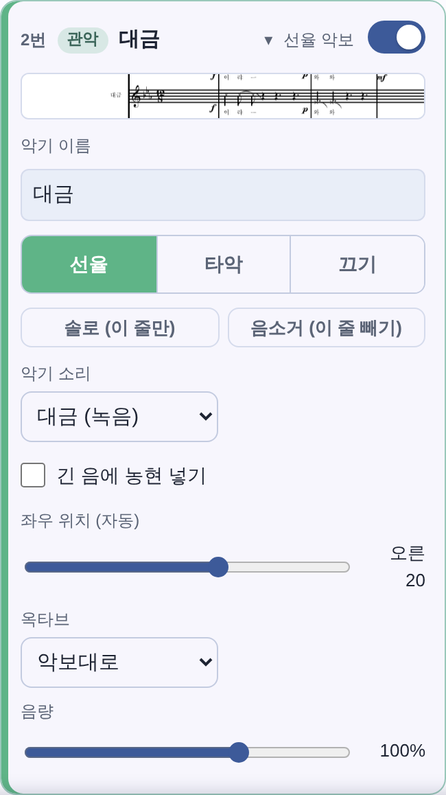
선율 줄을 펼친 모습: 첫 단 그림, 악기 이름, 역할, 악기 소리, 농현, 좌우 위치, 옥타브, 음량
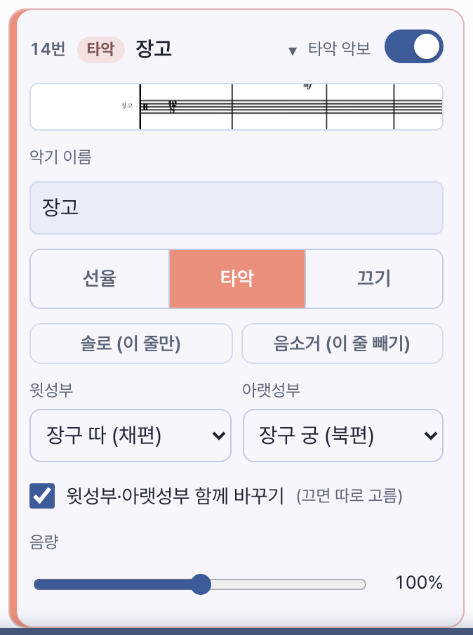
타악 줄을 펼친 모습: 악기 이름, 윗성부·아랫성부 소리, 함께 바꾸기, 음량
악기 이름을 잘못 읽었을 때 고치기
이름은 악보에서 읽은 그대로라 잘리거나 깨질 수 있습니다(예: '가야금'이 '야금'으로). 펼친 줄의 첫 단 그림으로 어떤 악기인지 확인한 뒤 이름을 고칩니다.
예시 14번 줄이 '장고'로 읽혔는데 실제로는 모듬북 파트다.
그 줄의 이름을 눌러 펼칩니다.
악기 이름 칸에 모듬북을 적고 Enter를 누릅니다(또는 다른 곳을 누름).
고친 이름에 맞는 소리가 있으면 이 소리로 바꾸기: 북 (녹음, 높고 짧게) / 북 (녹음, 낮고 길게) 단추가 나옵니다. 누르면 소리도 바뀝니다. 지금 소리를 그대로 쓰려면 누르지 않으면 됩니다.
고친 이름은 줄 목록, 악보로 보기의 '○○만', 마디 미리보기, 음 고치기 창, MIDI·MusicXML 내보내기에 함께 쓰이고, 이 악보의 설정에 저장되어 다음에 열어도 남습니다.
원래 이름으로 돌리려면 악보 이름으로를 누르거나 칸을 비우고 Enter.
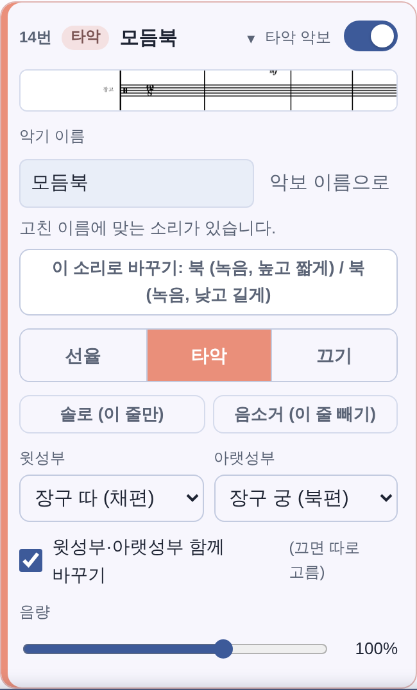
'장고'를 '모듬북'으로 고친 줄. 맞는 북 소리로 바꾸는 단추가 나옴.
3-3. 빠르기 확인하기
빠르기 칸을 열면 악보에서 읽은 빠르기 표가 있습니다. 연변목가는 1마디 ♩.=52처럼 구간마다 빠르기가 채워져 있습니다. 노란 칸이 있으면 5장을 보세요.
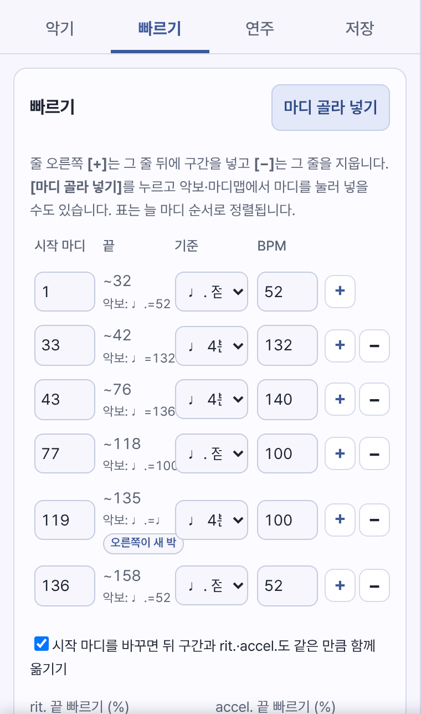
빠르기 칸: 시작 마디, 끝, 기준 음표, BPM, 악보에 적힌 표기. 줄 오른쪽 [+]는 그 줄 뒤에 구간 넣기, [−]는 그 줄 지우기
3-4. 재생하기
아래 연주 막대의 노란 ▶를 누릅니다(또는 키보드 스페이스바).
처음 한 번은 "소리를 만드는 중… 60%"처럼 진행률이 나오고, 이어서 카운트인(박 세기 한 마디) 뒤에 연주가 시작됩니다.
다시 누르면 일시정지, 한 번 더 누르면 이어서 연주합니다. ■는 정지하고 처음으로 돌아갑니다.
가운데 마디맵이나 악보에서 마디를 누르면 그 마디부터 재생합니다. 진행 막대를 누르거나 동그란 손잡이를 끌어도 그 위치로 갑니다. 끄는 동안 막대 위에 '101마디 · 5:03'처럼 마디와 시간이 보이니, 원하는 마디에서 손을 떼세요. 연주 중·일시정지 중 모두 됩니다.
3-5. 내 파트만 빼고 반주로 듣기
예시 대금을 직접 불면서 연습하고 싶다 → 대금 줄의 M(음소거)을 누릅니다. 대금만 잠깐 소리가 꺼지고 가야금·장고는 그대로 납니다. 다시 누르면 대금이 돌아옵니다.
예시 이 대목에서 대금이 어떻게 가는지 대금만 들어 보고 싶다 → 대금 줄의 S(솔로)를 누릅니다. 대금만 들립니다. 여러 줄을 솔로로 하면 그 줄들만 들립니다.
솔로를 켜면 위에 노란 안내와 [모두 해제] 단추가 나옵니다.
솔로·음소거는 잠깐 쓰는 설정이라 저장되지 않습니다. 완전히 끄려면 켜기 스위치를 끄세요.
총보에 없는 악기 더하기 위 막대 악보(악보 파일) → 악보 추가로 피아노 악보처럼 총보에 없는 악기를 더할 수 있습니다. 총보의 어떤 악기를 파트보로 바꾸고 싶으면 그 줄을 끄고 그 악기의 파트보를 '악보 추가'로 올리면 됩니다.
4. 따라 하기 ② 어려운 대목만 반복하기
이번 예시 연변목가의 연습 번호 D(33~42마디)가 어렵다. 70% 빠르기로 시작해 한 바퀴 돌 때마다 5%씩 빨라져 원래 빠르기까지 올라가게 반복한다.
연주 막대 왼쪽 위 연습 번호 줄 끝의 상자에서 누르면 다음 번호 전까지 구간으로를 고릅니다.
D 33을 누릅니다. 구간이 33부터 42까지로 바뀌고 바로 재생됩니다.
연주 막대의 ⟲ 구간 반복을 눌러 켭니다(노랗게 바뀜). 42마디까지 가면 33마디로 돌아가 계속 반복합니다.
연주 칸에서 반복할 때마다 빠르게를 켭니다. '처음 70% · 한 번에 +5%'가 기본입니다.
재생하면 연주 막대에 1번째 · 70%처럼 몇 번째 반복인지, 지금 몇 %인지 나옵니다. 100%에 닿으면 그 빠르기로 계속 반복합니다.
D 구간(33~42마디)을 반복하며 70%에서 시작한 모습
다른 방법 연습 번호가 없는 악보는 연주 막대의 마디 ○부터 ○까지에 직접 숫자를 넣으세요. 예: 어려운 25~32마디만 → 25부터 32까지. 전곡을 누르면 처음부터 끝까지로 돌아갑니다.
전체를 천천히 연주 막대의 속도 −를 누르면 5%씩 느려집니다. 예: 100% → 70%는 여섯 번. 음 높이는 그대로이고, ♩=145인 곳은 70%에서 약 ♩=102로 연주됩니다. 연주 중에 눌러도 멈추지 않고 바로 그 속도로 들리며, 2~3초 뒤 새 속도로 다시 만든 소리로 저절로 바뀝니다.
5. 따라 하기 ③ 빠르기를 못 읽었을 때
이번 예시 Flower of K 총보는 빠르기 표시를 읽지 못해 빠르기 표가 노란 칸으로 남았다. ▶를 누르면 "템포를 입력해 주세요"가 나온다.
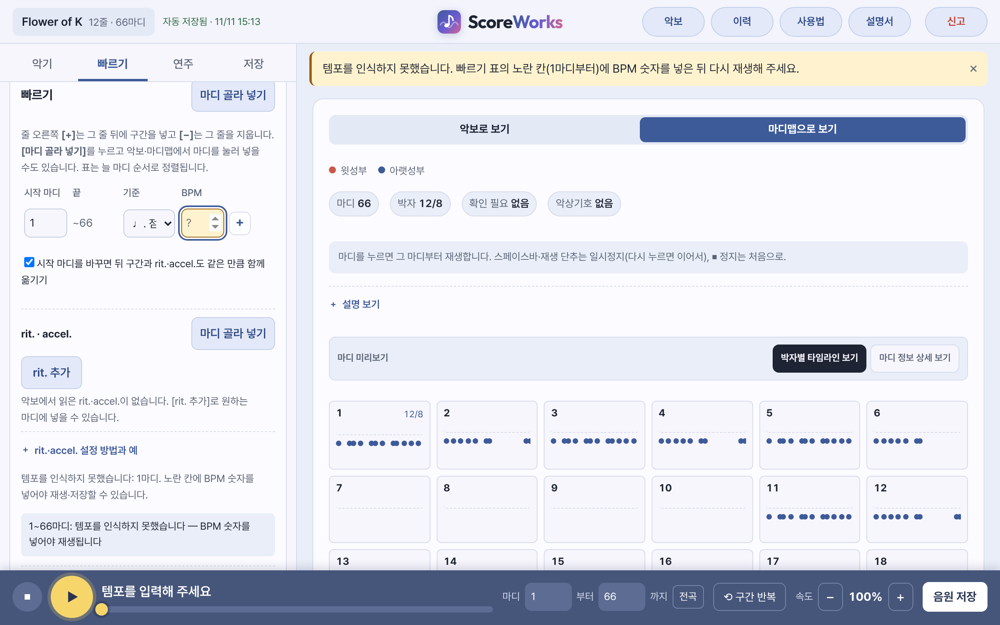
빠르기를 못 읽은 악보에서 ▶를 누르면 빠르기 칸이 열리고 노란 BPM 칸으로 데려갑니다.
악보를 보고 빠르기를 확인합니다. 예: 악보에 ♩.=60이라고 적혀 있다.
기준 상자에서 악보의 음표와 같은 것을 고릅니다. ♩.이면 ♩. 점4분, ♩이면 ♩ 4분. 12/8·6/8 장단(굿거리·자진모리 등)은 보통 점4분입니다.
BPM 칸에 60을 넣습니다. 노란색이 사라지면 재생할 수 있습니다.
곡 중간에 빠르기가 바뀌면 앞 구간 줄 오른쪽의 +를 누르고, 새로 생긴 줄에 바뀌는 시작 마디와 BPM을 넣습니다(처음에는 앞뒤 구간의 가운데 마디가 들어가 있습니다). 줄을 지우려면 그 줄의 −. 예: 33마디부터 ♩=84 → 시작 마디 33, 기준 ♩ 4분, BPM 84. 1~32마디는 앞 구간 빠르기, 33마디부터는 새 빠르기로 연주합니다.
곡 중간에 넣기: 마디를 눌러서
마디 번호를 세지 않고 악보에서 그 마디를 눌러 넣을 수 있습니다.
빠르기 칸 '빠르기' 제목 옆의 마디 골라 넣기를 누릅니다(rit.는 'rit. · accel.' 제목 옆의 것). 휴대폰에서는 설정 서랍이 내려가 악보가 보입니다.
악보로 보기나 마디맵에서 빠르기가 바뀌는 마디를 누릅니다. 이때는 재생되지 않고, 그 마디에서 시작하는 줄이 표의 제자리에 들어갑니다.
열린 칸에 BPM(rit.는 길이와 끝 %)을 넣습니다. 새 빠르기 구간은 그 마디에 적용되던 기준 음표와 BPM을 미리 가져오므로 숫자만 고치면 됩니다.
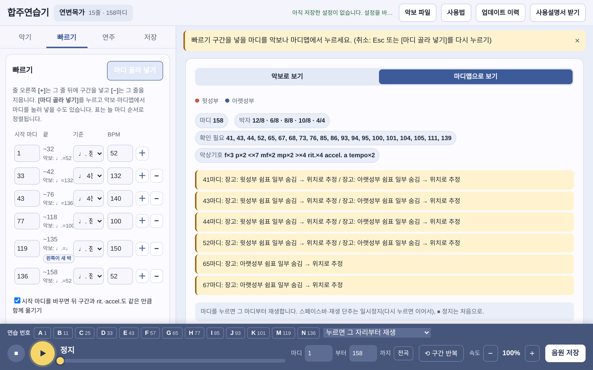
[마디 골라 넣기]를 누른 모습. 위에 안내가 나오고, 이때 마디를 누르면 재생 대신 그 마디에 빠르기 구간이 들어갑니다.
취소는 Esc 또는 [마디 골라 넣기]를 한 번 더. 컴퓨터에서는 마디맵의 마디 미리보기 창 아래 [빠르기 넣기]·[rit. 넣기]로도 됩니다. 표는 어디에 넣든 늘 마디 순서로 정렬되고 '끝'은 자동으로 맞춰집니다.
시작 마디를 바꾸면 뒤 구간도 함께 중간 구간의 시작 마디를 바꾸면(예: 37 → 41) 그 뒤의 빠르기 구간과 rit.·accel.도 같은 만큼(+4마디) 자동으로 옮겨집니다. 한 구간만 바꾸려면 표 아래 '시작 마디를 바꾸면 뒤 구간과 rit.·accel.도 같은 만큼 함께 옮기기' 체크를 끄세요. 뒤 구간이 마지막 마디를 넘게 되면 바꾸지 않고 알려 줍니다.
점점 느리게·빠르게 넣기 (rit.·accel.)
악보의 rit.·accel.은 자동으로 읽어 표에 넣습니다. 못 읽었거나 직접 넣고 싶으면 rit. 추가(표가 비어 있을 때) 또는 줄 오른쪽의 +를 누릅니다. −는 그 줄을 지웁니다.
원하는 것
시작 마디
종류
길이(마디 수)
끝 %
32마디로 끝나는 곡을 마지막 4마디에서 조금 느려지며 끝내기
29
rit.
4
85
마지막 두 마디에서만 확 느려지기
31
rit.
2
65
17~24마디 동안 점점 빨라지기
17
accel.
8
120
25마디부터 원래 빠르기로 돌아오기
25
a tempo
–
–
끝 %를 비워 두면 공통 값(rit. 80%, accel. 120%)을 씁니다. 한 마디에 바뀌는 정도 ≈ (100과 끝 %의 차이) ÷ 길이. 예: 끝 % 80, 길이 4 → 한 마디에 5%씩.
♩=♪처럼 음표끼리 같다는 표시 앞 구간에서 자동으로 계산합니다. 들어 보니 2배 빠르거나 느리면 그 구간 '끝' 칸의 왼쪽이 새 박 / 오른쪽이 새 박 단추를 눌러 방향을 바꾸세요.
6. 따라 하기 ④ 파트보로 장단 연습하기
이번 예시 총보는 없고 연변목가의 파트보 PDF 세 개(악기마다 한 파일)가 있다. 셋을 합쳐 들어 본다. 장구 파트보 하나만 올려도 장단 연습이 됩니다.
첫 화면의 파트보 업로드에서 파트보 추가를 누르고, 파일 선택 창에서 세 파일을 함께 고릅니다(Ctrl 또는 ⌘를 누른 채 여러 개 선택). 나중에 하나씩 더 올려도 됩니다.
파트보는 올린 파일을 모두 켭니다(선율 파트는 선율, 타악 파트는 타악).
마디 번호·박자·도돌이표는 마디를 가장 많이 읽은 파트를 기준으로 맞춥니다.
▶로 재생합니다. 빼고 싶은 파트는 악보 파일 창에서 ✕를 누르거나 악기 칸에서 끕니다.
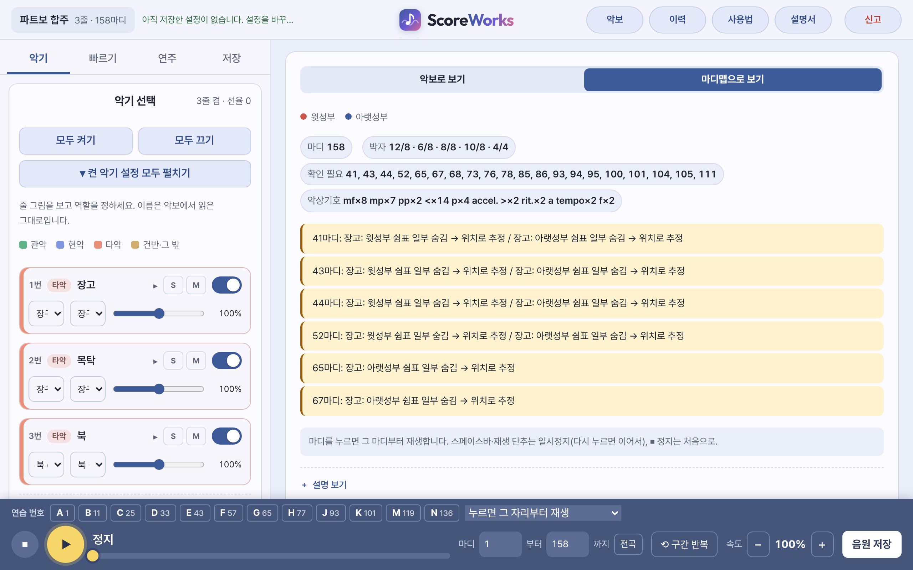
파트보 세 개를 합친 모습
타악 소리 고르기 타악 줄은 위쪽 음표(윗성부)와 아래쪽 음표(아랫성부)를 따로 소리를 고릅니다. 한쪽을 고르면 다른 쪽도 짝 소리로 바뀝니다. 예: 윗성부를 장구 따로 → 아랫성부는 장구 궁, 꽹과리 → 꽹과리. 따로 고르려면 펼친 줄에서 윗성부·아랫성부 함께 바꾸기를 끄세요.
악기에서 대금을 끄고, 반주로 들을 줄(가야금·장고 등)을 켭니다. 저장 파일에는 켜 둔 줄만 들어갑니다.
연주 막대의 음원 저장을 누르거나 저장 칸을 엽니다.
음원 저장의 마디를 25부터 56까지로, 속도를 80%로 정합니다. 처음에는 재생 설정을 그대로 따라가고, 여기서 바꾸면 그때부터 따로 정해집니다(재생 설정 가져오기로 다시 맞춤).
카운트인을 켜 두면 시작 전 한 마디 박을 셉니다. 따라 들어갈 때 편합니다.
형식은 MP3(작은 용량, 기본)나 WAV(무압축)를 고르고 MP3 저장을 누릅니다. 파일 이름에 마디 범위·속도가 붙습니다. 예: 연변목가_25-56마디_80%_카운트인.mp3
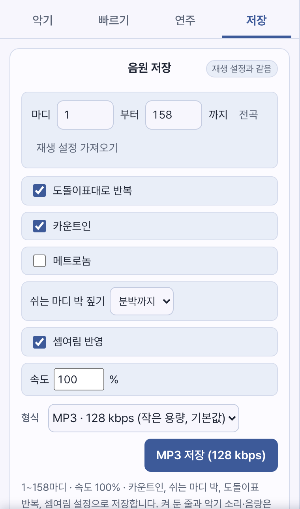
저장 칸의 음원 저장
알아 두기 MP3 변환기는 처음 한 번 인터넷에서 받아 옵니다. WAV는 zip으로 묶여 저장되니 압축을 풀어 쓰세요. 휴대폰·태블릿은 5분, 컴퓨터는 10분이 넘는 소리를 메모리 때문에 한 줄(모노)로 만듭니다.
다른 프로그램으로 내보내기
MIDI 저장: 켠 줄을 연주 순서대로 펼쳐 줄마다 한 트랙으로. 전자 악기나 다른 프로그램에서 엽니다.
MusicXML 저장: 켠 줄을 악보 파일로. 뮤즈스코어·도리코·시벨리우스·피날레에서 열어 고칠 수 있습니다. 악보에서 읽은 조표와 박자표가 들어가고, 음 이름도 그 조에 맞게(예: 내림마장조면 E♭) 적힙니다. 가야금·양금처럼 오선이 둘인 악기는 한 파트의 두 오선으로 묶입니다. 음자리표, 이음줄, 셈여림과 꺾쇠, 빠르기, 연습 번호, 늘임표, 1·2번 괄호, 같은 마디 되풀이(%), 원래 악보의 줄 바꿈·쪽 바꿈까지 읽은 대로 옮겨 피날레에서 열면 원래 악보와 거의 같은 모양이 됩니다. 다만 악보를 잘못 읽은 곳은 그대로 옮겨지니 앱에서 고친 뒤 내보내세요. 악기 이름·묶음 괄호·악기 소리·셈여림 크기·연주 지시 글자(pizz.·arco 등)도 들어 있어 열자마자 편집하고 재생할 수 있습니다. 저장하면 원래 PDF와 자동으로 대조한 결과가 뜹니다. 보는 법과 고치는 법은 9장.
8. 악보로 보기와 음 고치기
악보로 보기
가운데 위의 악보로 보기를 누르면 올린 PDF가 그대로 보입니다. 연주하는 동안 지금 마디는 노란 칸, 지금 위치는 빨간 선으로 음표를 따라 움직이고, 다음 단·다음 쪽으로 넘어가면 악보가 따라 내려갑니다.
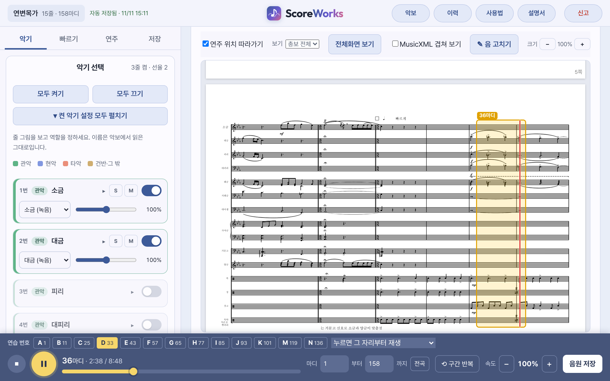
연습 번호 D부터 재생 중. 35마디에 노란 칸과 빨간 선.
연주 위치 따라가기를 끄면 악보를 직접 넘겨 볼 수 있습니다.
악보를 누르면 그 마디부터 재생합니다.
크기 −·+로 100~300%까지 키웁니다. 휴대폰에서 총보가 작으면 키우세요.
화면 가득 보기: 화면 전체에 악보만. 위쪽 단추로 재생·일시정지, ✕나 Esc로 돌아옵니다.
보기 상자에서 '총보 전체' 대신 '대금만'처럼 켠 줄을 고르면 그 악기 오선만 잘라 이어 보여 줍니다.
MusicXML 겹쳐 보기: 내보낼 MusicXML의 음을 악보 위에 동그라미로 겹쳐 그려, 앱이 PDF와 다르게 읽은 곳을 찾습니다(9장).
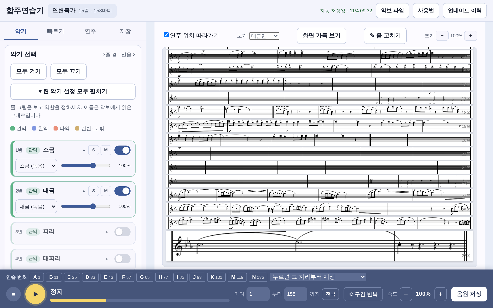
보기: 대금만. 총보에서 대금 오선만 잘라 이어 붙여 크게 봅니다.
음 고치기 (✎)
자동으로 읽다 보니 음 높이나 길이가 악보와 다르게 들리는 마디가 있을 수 있습니다. 직접 고칠 수 있습니다.
예시 21마디 소금의 둘째 음이 레♯으로 들리는데 악보는 레다 → 21마디 ✎ 수정 → 둘째 음의 ♭을 한 번 누름 → 닫기.
음마다 ♭·♯(반음), ↓8·↑8(옥타브)로 높이를, 목록에서 길이를 고릅니다. 길이를 바꾸면 같은 성부의 뒤 음들이 따라 밀립니다. 타악은 길이만 고칩니다.
▶ 이 마디부터 듣기로 확인하고 닫습니다. 고친 마디에는 번호 옆에 ✎가 붙고, 이 기기에 바로 저장됩니다.
되돌리기: 음마다 ↺, 마디마다 [이 마디 모두 되돌리기], 방금 한 수정은 Ctrl+Z.
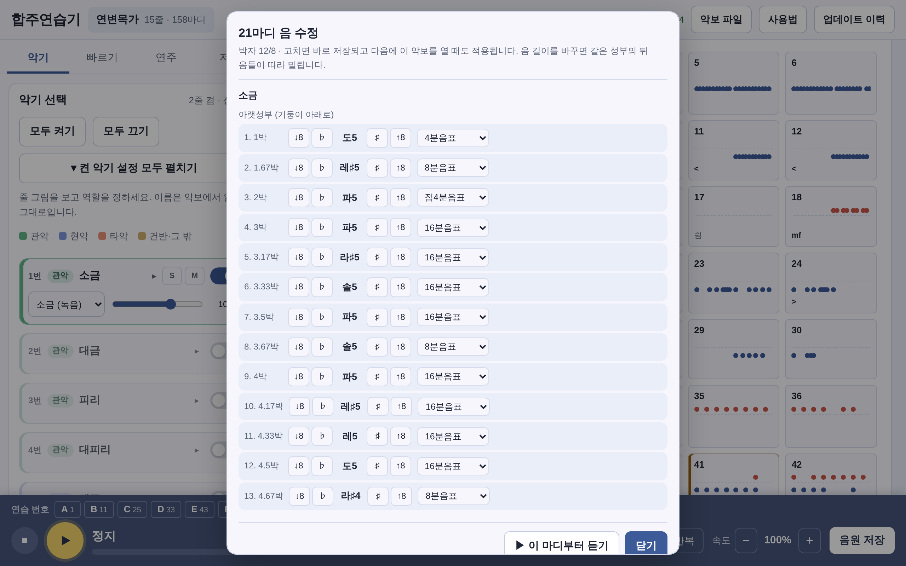
21마디 음 수정 창
9. MusicXML로 내보내 악보 프로그램에서 고치기
읽어 들인 악보를 MusicXML로 내보내 피날레·뮤즈스코어·시벨리우스·도리코에서 열면, 처음부터 다시 그리지 않고 새 악보(파트보·편곡)를 만들 수 있습니다. 다만 앱은 PDF를 자동으로 읽기 때문에 잘못 읽은 곳도 그대로 옮겨집니다. 그래서 MusicXML을 저장할 때마다 내보낸 음을 원래 PDF와 자동으로 대조해, 손봐야 할 마디를 알려 줍니다.
이번 예시 연변목가 총보에서 대금·가야금·장고를 MusicXML로 내보내고, 대조 결과로 손봐야 할 마디를 찾아 고친다.
9-1. 내보내기 전에
켠 줄만 내보냅니다. 악기 칸에서 필요한 줄을 켜세요. 파트보 하나만 만들 거라면 그 줄만 켜면 됩니다.
악기 이름을 잘못 읽었으면 먼저 고치세요(3-2). 고친 이름이 MusicXML의 악기 이름이 됩니다.
옥타브·조옮김을 바꿔 둔 줄은 바꾼 높이로 적힙니다. 원래 악보 그대로 옮기려면 '악보대로'·0으로 두세요.
✎로 고친 음은 고친 대로 내보냅니다.
9-2. 저장하고 대조 결과 보기
저장 칸에서 MusicXML 저장을 누릅니다. 파일(곡이름.musicxml)이 내려받아집니다.
바로 'MusicXML을 저장했습니다' 창이 뜹니다. 앱이 방금 내보낸 파일을 다시 읽어, 음마다 악보 쪽 위의 자리(가로 = 박 위치, 세로 = 음 이름·옥타브)를 구하고 악보로 보기 화면(원래 PDF)의 음표 머리와 하나하나 맞춰 본 결과입니다.
줄마다 확인할 마디 번호가 나옵니다.
굵은 빨간 번호: 내보낸 음이 PDF 음표 머리와 맞지 않는 마디. 빠진 음, 남는 음, 박 위치나 음 높이가 다른 음이 있습니다. 반드시 확인하세요.
보통 번호: 앱이 읽으면서 '확인 필요' 경고를 붙였지만 음표 머리 자리는 PDF와 맞는 마디. 대개 그대로 써도 되지만 한 번 눈으로 보면 좋습니다(예: '쉼표 일부 숨김 → 위치로 추정'은 숨긴 쉼표를 자리로 짐작했다는 뜻).
번호에 마우스를 올리면 이유가 나옵니다. 예: 'PDF 음표 머리 3개에 맞는 음이 없음(빠졌거나 시각이 다름) / PDF 머리가 없는 자리의 음 3개'.
아무 번호도 없으면 내보낸 음이 PDF와 모두 맞은 것입니다. 그대로 악보 프로그램에서 여세요.
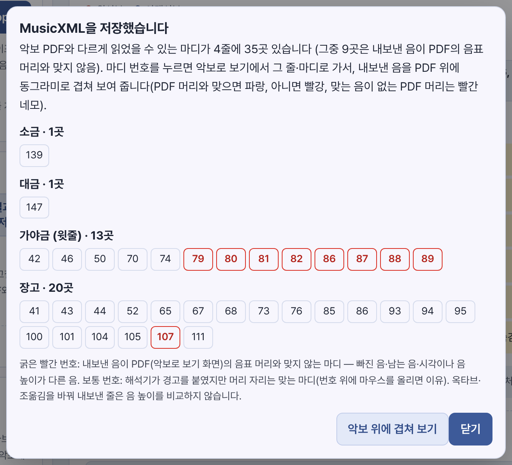
저장 뒤 대조 창. 가야금 79~82·86~89마디, 장고 107마디가 빨간 번호.
9-3. 빨간 마디를 악보 위에서 보기 (겹쳐 보기)
빨간 번호를 누르면 창이 닫히고 악보로 보기에서 그 줄만 보기로 바뀌어 그 마디로 갑니다. 이때 MusicXML 겹쳐 보기가 켜져, 내보낸 음이 PDF 위에 동그라미로 겹쳐 그려집니다.
표시
뜻
파란 동그라미
내보낸 음이 PDF 음표 머리와 같은 자리 — 맞음
빨간 동그라미
내보낸 음인데 그 자리에 PDF 머리가 없음 — 박 위치나 음 높이가 다르거나 남는 음
빨간 네모
PDF 음표 머리인데 맞는 내보낸 음이 없음 — 빠졌거나 다른 자리로 갔음
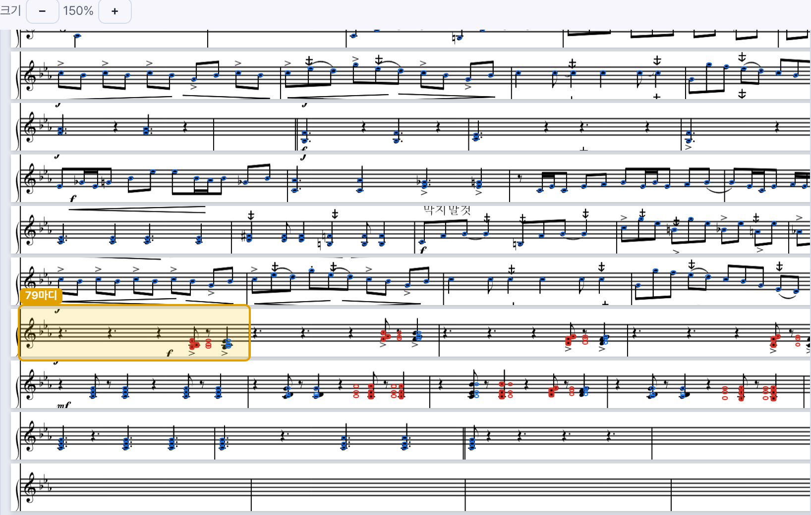
가야금 79마디: 빨간 네모(PDF 머리) 바로 옆에 빨간 동그라미(내보낸 음). 2도로 붙은 화음 머리를 따로 읽어 마디가 길어지고 음이 뒤로 밀렸다.
겹쳐 보기는 악보로 보기 위쪽의 MusicXML 겹쳐 보기로 언제든 켜고 끕니다. 저장 창의 악보 위에 겹쳐 보기로도 켭니다.
켜 둔 채로 줄을 켜고 끄거나 음을 고치면 동그라미도 바로 다시 그려집니다. 다시 저장하지 않아도 고친 결과를 확인할 수 있습니다.
'보기' 상자에서 '총보 전체'를 고르면 켠 줄 모두의 동그라미가 함께 나옵니다.
9-4. 무엇을 어떻게 고치나
겹쳐 보기에서 보이는 것
할 일
빨간 동그라미가 PDF 머리와 같은 가로 자리에 있는데 위나 아래로 비켜 있음 (음 높이가 다름)
앱에서 고칩니다.✎ 음 고치기를 켜고 그 마디를 눌러 그 음의 ♭·♯(반음), ↓8·↑8(옥타브)로 PDF와 같은 높이로 맞춥니다. 동그라미가 파랗게 바뀌면 다시 MusicXML 저장.
빨간 동그라미가 PDF 머리의 오른쪽·왼쪽으로 비켜 있고, 앞 음의 길이를 잘못 읽은 것이 보임 (예: 8분음표를 4분음표로)
앱에서 고칩니다. ✎에서 잘못 읽은 음의 길이를 악보대로 고르면 같은 성부의 뒤 음들이 따라 당겨지거나 밀립니다. 동그라미가 머리 위로 오면 다시 저장.
빨간 네모만 있음 (음이 빠짐), 빨간 동그라미만 있음 (없는 음이 생김), 화음 머리를 따로 읽어 마디가 길어짐 (위 79마디 예)
앱의 ✎는 음을 더하거나 지우거나 합치지는 못합니다. 마디 번호를 적어 두고, 내보낸 파일을 악보 프로그램에서 연 뒤 그 마디를 PDF대로 고치세요. 곡 이름·줄·마디 번호를 알려 주시면 앱의 읽기를 고칩니다.
셋잇단·다섯잇단음표가 섞인 복잡한 마디에서 동그라미가 조금씩 비켜 있음
악보 프로그램이 열 수 있게 그 마디를 16분음표 칸에 맞춰 적은 것입니다. 악보 프로그램에서 잇단음표로 다시 적어 주세요.
보통 번호(경고만 있고 동그라미는 파랑)
음은 PDF와 맞습니다. 숨긴 쉼표 자리 등만 눈으로 확인하면 됩니다.
순서 정리 ① 필요한 줄 켜기 → ② MusicXML 저장 → ③ 빨간 번호 누르기 → ④ 음 높이·길이 문제는 ✎로 고치고 동그라미가 파래졌는지 확인 → ⑤ 다시 MusicXML 저장(빨간 번호가 줄었는지 확인) → ⑥ 남은 마디(빠진 음·남는 음 등)는 번호를 적어 두고 악보 프로그램에서 고치기.
대조하지 못하는 것 옥타브·조옮김을 바꿔 내보낸 줄과 타악 줄은 음 높이를 비교하지 않고 박 위치만 맞춰 봅니다(타악은 소리마다 정한 자리로 적기 때문). MusicXML로 올린 악보처럼 쪽 그림이 없으면 PDF 대신 앱이 읽은 결과와 박 위치만 비교하고 겹쳐 보기는 할 수 없습니다. 셈여림·이음줄·글자 같은 표기는 대조하지 않으니 악보 프로그램에서 한 번 훑어보세요.
9-5. 악보 프로그램에서 열 때
원래 악보의 쪽 크기·오선 크기·줄 바꿈·쪽 바꿈·마디 폭이 들어 있어 피날레에서는 원래 PDF와 거의 같은 모양으로 열립니다.
뮤즈스코어는 마디 폭을 쓰지 않고 음표 간격을 조금 넓게 잡아, 빽빽한 곡은 쪽이 조금 늘 수 있습니다.
악기 이름·묶음 괄호·악기 소리·셈여림·이음줄·빠르기·연습 번호·도돌이표·1·2번 괄호가 들어 있어 열자마자 편집하고 재생할 수 있습니다.
10. 마디맵으로 보기
마디맵은 곡 전체를 마디마다 칸 하나로 펼쳐 보여 줍니다. 리듬이 어떻게 읽혔는지, 어디서 박자·빠르기·셈여림이 바뀌는지, 어느 마디를 확인해야 하는지 한눈에 볼 수 있습니다. 쪽 그림이 없는 MusicXML 악보도 마디맵으로 봅니다.
가운데 칸 위의 마디맵으로 보기를 누르면 열립니다(악보로 보기로 돌아감). 고른 보기는 이 기기에 기억됩니다.
10-1. 위쪽 요약
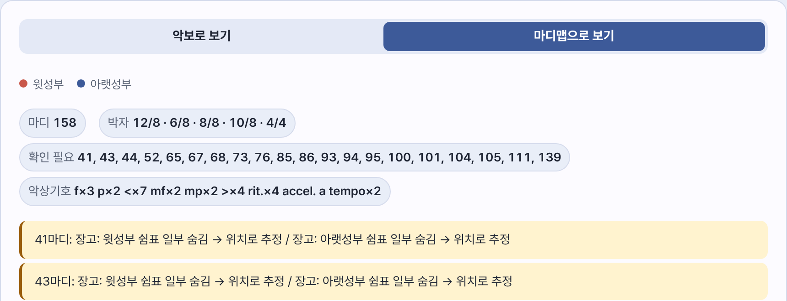
마디맵 위쪽: 성부 색, 요약, 확인할 마디 안내(예시: 연변목가 총보)
항목
뜻과 예
● 윗성부 · ● 아랫성부
마디 칸의 점 색입니다. 빨간 점 = 윗성부(악보에서 위쪽 음표, 장구라면 채편 '따'), 파란 점 = 아랫성부(아래쪽 음표, 북편 '궁').
마디
읽은 마디 수. 예: 마디 158.
박자
곡에 쓰인 박자들. 예: 12/8 · 6/8 · 8/8 · 10/8 · 4/4 → 중간에 박자가 여러 번 바뀌는 곡.
확인 필요
인식이 불확실한 마디 번호들. 마디 칸에 노란 테두리로도 표시됩니다. '없음'이면 모두 박자와 맞게 읽힌 것입니다.
악상기호
읽어 낸 셈여림·빠르기 말과 개수. 예: f×11 p×4 <×14 rit.×4 → f가 11곳, 크레셴도가 14곳, rit.이 4곳.
노란 안내 목록
확인할 마디마다 무엇이 불확실한지. 예: "2마디: 소금: 아랫성부 쉼표 일부 숨김 → 위치로 추정" = 악보에서 숨겨 둔 쉼표 자리를 음표 위치로 짐작했다는 뜻. 대부분 소리에는 문제가 없지만, 이상하게 들리면 이 마디부터 확인하세요.
10-2. 마디 칸 읽기
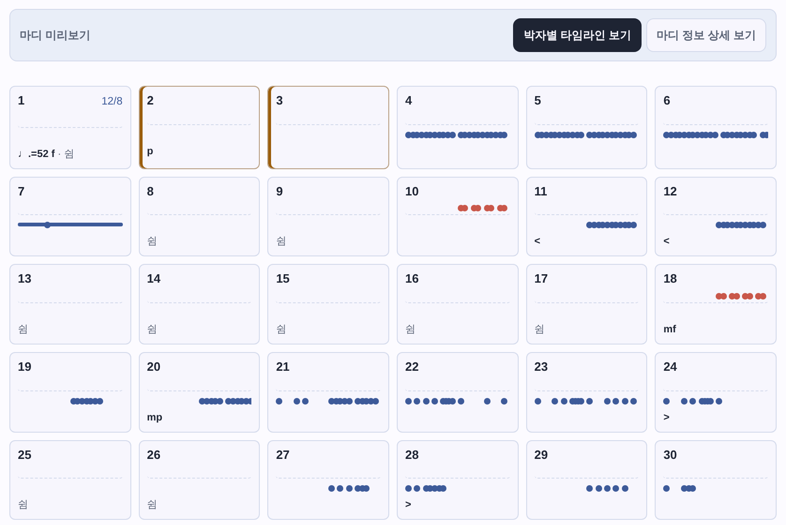
마디 칸(박자별 타임라인 보기). 1~30마디.
칸 하나가 한 마디입니다. 칸 안 점선 위는 윗성부, 점선 아래는 아랫성부이고, 왼쪽 끝이 마디 처음, 오른쪽 끝이 마디 끝입니다. 점 하나가 한 번 치거나 소리 내는 자리입니다.
보이는 것
뜻 (위 그림의 예)
왼쪽 위 숫자
마디 번호. 고친 마디는 번호 옆에 ✎.
오른쪽 위 파란 숫자
박자가 바뀌는 마디. 예: 1마디 12/8.
점이 촘촘한 줄
빠른 음이 이어지는 곳. 예: 4~6마디에 아랫성부(파란 점)가 마디 가득.
큰 점 / 앞의 작은 점
악센트 / 꾸밈음.
가로 막대
굴림(롤, 트레몰로). 예: 7마디의 긴 막대 = 한 마디 내내 굴림.
아래 글자
셈여림·빠르기·악상. 예: 1마디 '♩.=52 f · 쉼'(빠르기, 포르테, 이 마디는 쉼), 2마디 p, 11·12마디 <(크레셴도), 18마디 mf, 24·28마디 >(악센트·디크레셴도 표시), rit.·accel.·a tempo, ‖: :‖(도돌이표), "% 앞 마디 반복".
'쉼'
켜 둔 줄 모두 칠 음이 없는 마디. 예: 8·9·13~17마디. 연주 칸의 '쉬는 마디 박 짚기'를 켜면 이런 마디에서 박을 짚어 줍니다.
노란 테두리
확인 필요 마디. 예: 2·3마디. 마우스를 올리면 이유가 나옵니다.
점의 색이 한쪽만 보일 때 켜 둔 줄에 따라 달라집니다. 예: 소금만 켜면 소금 음표만, 장고까지 켜면 장고의 따(빨강)·궁(파랑)도 함께 보입니다. 마디맵은 켜 둔 줄을 모아 보여 줍니다.
10-3. 마디 누르기와 연주 중 표시
칸을 누르면 그 마디부터 재생합니다.
컴퓨터에서 마우스를 올리면 칸 안에 ■ 정지와 ✎ 수정 단추가 나옵니다. 휴대폰·태블릿은 ✎ 수정이 늘 보입니다.
연주하는 동안 지금 마디가 노란 칸으로 바뀌고, 화면이 따라 내려갑니다.
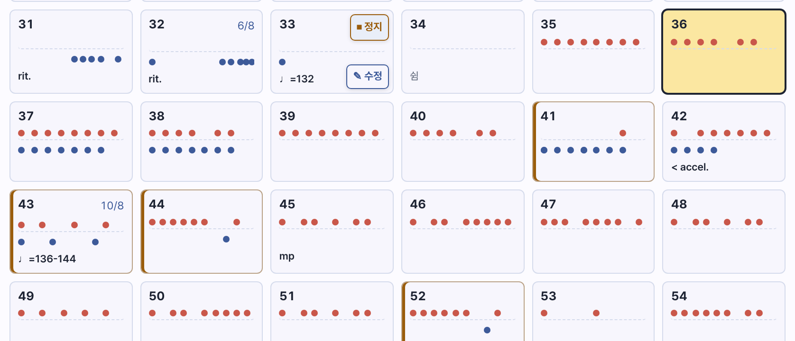
33마디부터 재생해 36마디를 연주하는 중(노란 칸). 37마디부터 윗성부·아랫성부가 함께 나옵니다.
10-4. 마디 미리보기 (마우스를 올리면 뜨는 창)
컴퓨터에서 마디 칸에 마우스를 올리면 그 마디를 자세히 보여 주는 창이 뜹니다. 위쪽 마디 미리보기의 두 단추로 창의 모양을 고릅니다.
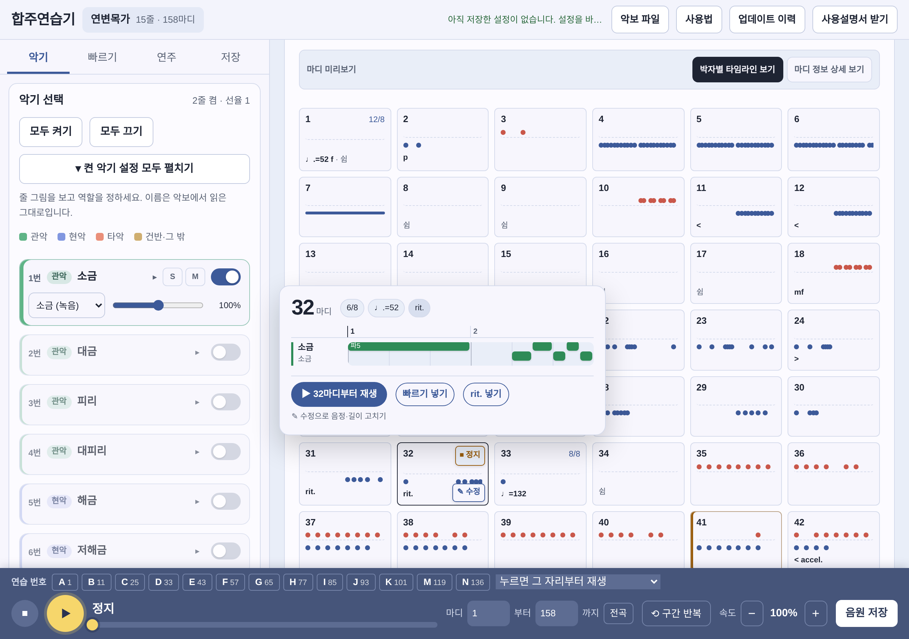
박자별 타임라인 보기: 박 눈금(1~8) 위에 음 이름 막대(선율)와 점(타악). 아래 단추로 그 마디부터 재생하거나 그 마디에 빠르기·rit.를 넣습니다
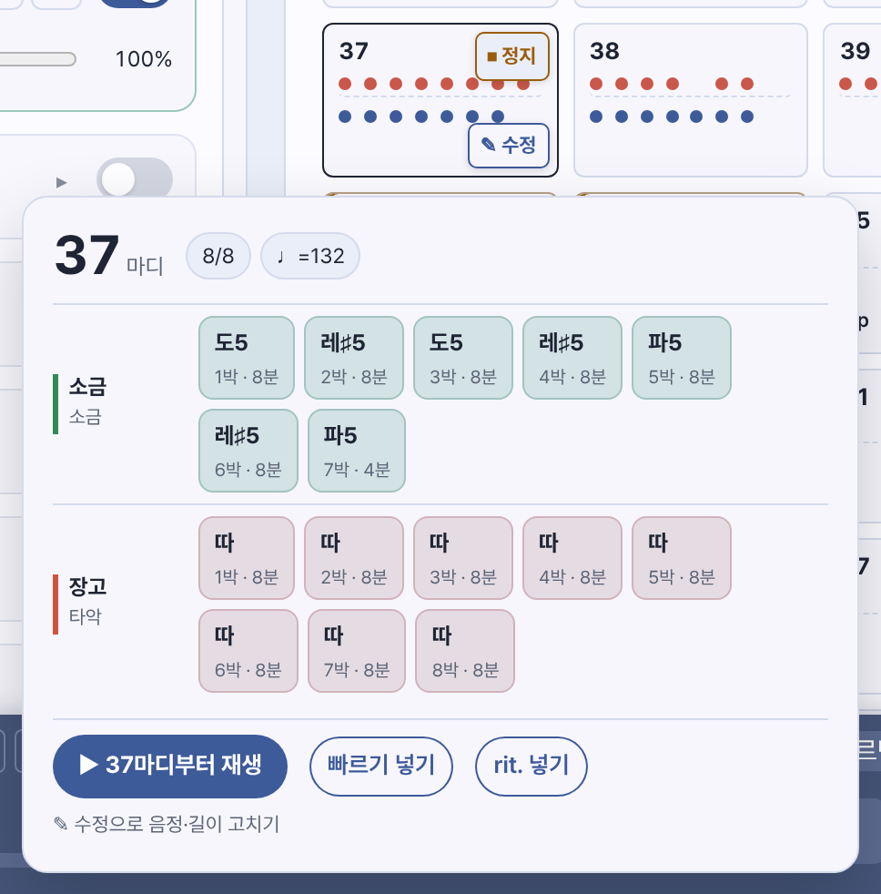
마디 정보 상세 보기: 음마다 이름·몇 박째·길이
위쪽에는 마디 번호와 박자(8/8), 빠르기(♩=132), 셈여림·rit. 같은 표시가 나옵니다.
켜 둔 줄마다 한 줄씩 나오고, 선율 줄은 음 이름(예: 도5, 레♯5, 파5), 타악 줄은 따·궁 자리를 보여 줍니다.
▶ 37마디부터 재생을 누르면 바로 그 마디부터 들을 수 있습니다.
예시: 악보와 다르게 들리는 음 찾아 고치기
들어 보니 37마디 소금 가락이 이상하다 → 마디맵에서 37마디에 마우스를 올린다.
마디 정보 상세 보기로 바꾸면 '도5 1박·8분, 레♯5 2박·8분 …'처럼 음마다 나온다. 악보와 한 음씩 맞춰 본다.
악보는 레인데 레♯5로 읽혔다면 37마디 칸의 ✎ 수정 → 그 음의 ♭ 한 번 → 닫기(8장 '음 고치기').
창의 ▶ 37마디부터 재생으로 고친 소리를 확인한다.
확인 필요 마디를 빠르게 훑기 위쪽 '확인 필요'의 마디 번호를 차례로 찾아가 노란 테두리 칸에 마우스를 올려 이유를 보고, 의심되면 ▶로 들어 보세요. 대부분은 숨긴 쉼표처럼 소리에 영향이 없는 경우입니다.
11. 칸별 기능 자세히
악기 칸
항목
설명과 예
켜기 스위치
그 줄을 듣거나 끕니다. 다시 켜면 끄기 전 역할(선율/타악)로 돌아옵니다.
모두 켜기·모두 끄기
한꺼번에. 모두 켜기는 높은음자리표로 적은 북·심벌 같은 타악 줄도 타악으로 켭니다.
켠 악기 설정 모두 펼치기
켠 줄의 자세한 설정을 한꺼번에 펼칩니다. 다시 누르면 모두 접힙니다.
역할
선율: 음높이까지 연주 / 타악: 리듬만, 윗·아랫성부를 고른 타악기로 / 끄기.
악기 이름
악보에서 잘못 읽은 이름을 고칩니다. 비우거나 [악보 이름으로]를 누르면 원래 이름. 맞는 소리가 있으면 [이 소리로 바꾸기] 단추가 나옵니다(3-2 참고).
악기 소리
가야금·거문고·양금·대금·소금·피리·대피리·태평소·생황·해금·아쟁·피아노·팀파니는 직접 녹음한 소리입니다. 이름으로 악기를 모르면 가야금으로 정해 두고 안내가 나오니 맞게 바꾸세요.
음량
0~200%. 예: 장구는 60%로 작게 깔고 내 악기는 120%로 크게.
옥타브
악보보다 한두 옥타브 높이거나 낮춰 냅니다. 태평소처럼 실제보다 한 옥타브 낮게 적은 악보는 자동으로 맞추고 안내가 나옵니다.
좌우 위치
연주 칸의 '좌우 배치'를 켰을 때 그 줄이 왼쪽·오른쪽 어디서 들릴지. 처음에는 국악관현악 자리처럼(가야금·거문고 왼쪽, 아쟁·대금 오른쪽).
긴 음에 농현 넣기
긴 음에 녹음한 농현·요성을 넣습니다. 줄마다 켜고 끕니다.
S·M
솔로(그 줄만)·음소거(그 줄 빼기). 저장되지 않는 잠깐 설정.
빠르기 칸
빠르기 표: 빠르기가 바뀌는 곳마다 한 줄. 시작 마디부터 다음 줄 시작 앞까지 같은 빠르기. '끝'은 자동입니다. 숫자를 비우면 재생되지 않습니다(노란 칸).
기준 음표: ♩ 4분, ♩. 점4분, ♪ 8분, 2분. 예: 점4분 84 = 점4분음표를 1분에 84번(한 박 약 0.71초).
마디 골라 넣기: 누른 뒤 악보·마디맵에서 마디를 누르면 그 마디에 빠르기 구간(또는 rit.)을 넣습니다. 5장 참고.
뒤 구간 함께 옮기기(체크): 시작 마디를 바꾸면 뒤 구간과 rit.·accel.도 같은 만큼 옮깁니다.
rit.·accel. 표: 5장 참고.
연습 속도: 빠르기 표 전체에 곱합니다. 연주 막대의 속도 −·+와 같은 값입니다.
연주 칸
연주 칸
항목
설명과 예
도돌이표대로 반복
도돌이표, 1·2번 괄호, D.S.·D.C.·코다를 따라 실제 연주 순서대로. 끄면 처음부터 끝까지 한 번씩.
구간 계속 반복
정한 범위를 멈출 때까지 반복(연주 막대의 ⟲와 같음). 음원 저장은 한 번 분량.
반복할 때마다 빠르게
처음 %(30~100)에서 시작해 한 바퀴마다 +%(1~30)씩 연습 속도까지.
카운트인
시작 전 한 마디 박을 "똑 딱 딱 딱"으로. 예: 12/8, ♩.=84 → 점4분 4번 뒤 시작.
메트로놈
연주 내내 박마다 클릭. 마디 첫 박은 높은 소리.
쉬는 마디 박 짚기
칠 음이 없는 마디에서만 나무 막대 소리로 박을. 박만 / 분박까지. 연주 막대에 "쉼 3/8마디"처럼 몇 번째 쉬는 마디인지도.
셈여림 반영
p·mf·f·크레셴도를 소리 크기에. 악센트(>)는 언제나 세게.
소리 다듬기
조옮김(반음 단위, 선율만), 기준음 A4(보통 440, 악기를 442에 맞췄다면 442), 늘임표 길이, 잔향, 스타카토·트릴, 좌우 배치, 사람처럼 연주(세기·박을 아주 조금씩 흔들어 기계 소리처럼 들리지 않게).
연주 순서
실제로 칠 마디 순서. 반복 기호를 잘못 읽었으면 직접 고칩니다. 예: 1-8, 1-4, 9-16 → 1~8마디, 다시 1~4마디, 이어서 9~16마디. [자동으로]로 되돌림.
저장 칸
저장 칸 아래쪽: 이 악보의 설정과 공유 설정 (13장)
음원 저장, MIDI: 7장 참고. MusicXML: 7장, 저장 뒤 대조는 9장.
이 악보의 설정: 13장 참고.
음 고친 내용: [수정 내보내기]로 파일로 받아 두고, 다른 기기에서 같은 악보를 올린 뒤 [수정 가져오기]. [모두 되돌리기]는 이 악보의 수정을 전부 지웁니다.
12. 휴대폰·태블릿에서 쓰기
화면 폭이 좁으면(휴대폰, 세로로 든 태블릿) 왼쪽 네 칸이 아래 서랍으로 바뀝니다.
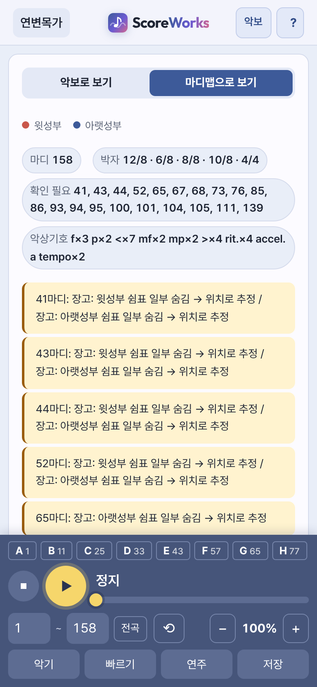
악보를 올린 화면
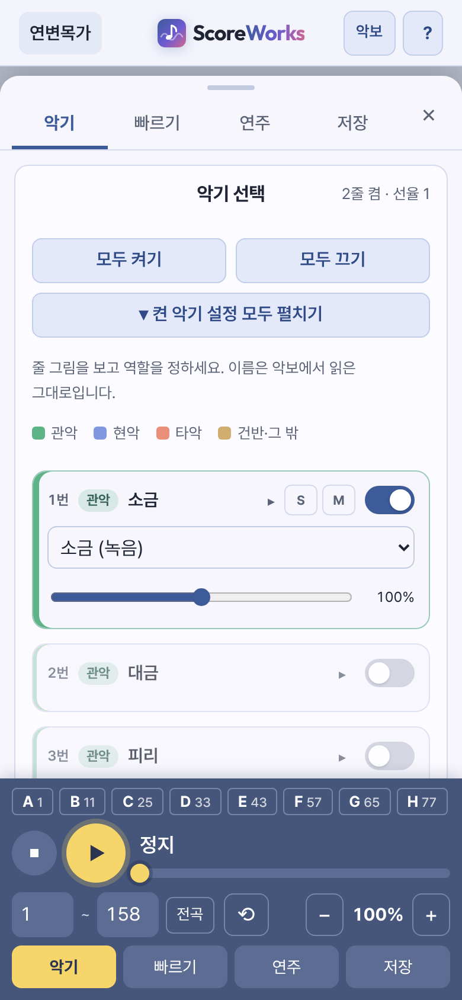
[악기]를 눌러 연 서랍
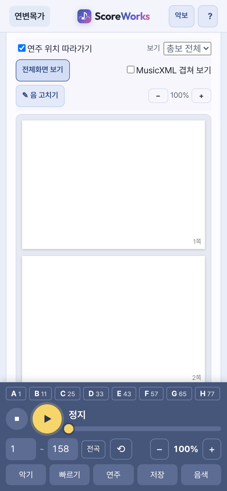
악보로 보기
연주 막대 맨 아래의 악기빠르기연주저장 중 하나를 누르면 그 칸이 서랍으로 올라옵니다.
같은 단추를 다시 누르거나, 서랍의 ✕, 서랍 바깥을 누르면 닫힙니다.
서랍이 열려 있어도 연주 막대의 재생·정지는 그대로 쓸 수 있습니다.
휴대폰을 가로로 눕히면 서랍이 왼쪽에서 열리고 연주 막대가 두 줄로 줄어듭니다.
좁은 화면에서는 구간이 '1 ~ 66'처럼, 구간 반복은 ⟲, 사용법은 ?로 짧게 보입니다. 업데이트 이력은 첫 화면이나 ?(사용법) 창 아래에서 엽니다.
아이폰 무음 스위치를 켜 둬도 소리가 납니다. 처음 한 번은 재생 단추를 직접 눌러야 합니다. 파일로는 열 수 없으니 반드시 웹 주소로 여세요.
악보가 사라졌을 때 휴대폰은 메모리가 모자라면(화면을 확대하거나 다른 앱에 다녀오면) 페이지를 처음부터 다시 엽니다. 그러면 보던 악보를 저절로 다시 불러오고 설정도 그대로입니다. 새로 연 화면에서는 첫 화면의 지난번 악보 다시 열기를 누르세요.
13. 설정 저장과 다른 기기로 옮기기
빠르기 표, 연습 속도, 줄마다 켜기·소리·음량·옥타브, 연주 범위·카운트인 같은 재생 옵션, 음원 저장 옵션은 바꿀 때마다 그 악보에 묶여 이 브라우저에 자동 저장됩니다. 같은 악보를 다시 열면 자동으로 불러옵니다(파일 이름이 달라도 내용이 같으면 같은 악보). 위 막대에 "자동 저장됨 · 시각"이 보입니다.
예시: 집 컴퓨터 설정을 연습실 태블릿으로
집 컴퓨터에서 저장 → 이 악보의 설정 → 파일로 내보내기. .json 파일이 받아집니다.
그 파일과 악보 PDF를 태블릿으로 옮깁니다(메일·메신저·클라우드).
태블릿에서 같은 악보를 올리고 파일 가져오기로 .json을 고릅니다.
음 고친 내용도 옮기려면 음 고친 내용의 [수정 내보내기]·[수정 가져오기]를 같은 방법으로 씁니다.
공유 설정: 저장소에 올려 두고 어느 기기에서나 받기
저장 → 이 악보의 설정 아래 공유 설정 (GitHub 저장소)는 파일을 주고받지 않고 설정을 나누는 방법입니다. 악기 이름·소리·음량, 빠르기·rit. 표, 음정·길이 수정이 한 묶음으로 ScoreWorks 저장소에 올라갑니다(악보 PDF는 올라가지 않습니다).
하는 일
누가
방법
받기
누구나 (토큰 필요 없음)
같은 악보를 열면 자동으로 찾습니다. 이 기기에 저장한 설정이 없으면 위쪽에 "공유 설정이 저장소에 있습니다… 불러와 적용할까요?"가 뜨고 확인 (불러와 적용)을 누르면 적용합니다(나중에는 그대로 둠). 이 기기에 저장한 설정이 있으면 "새 공유 설정이 있습니다"라고 알려만 줍니다. 그때는 공유 설정 불러오기를 눌러야 바뀝니다. 이 단추는 저장소에 그 악보의 설정이 있을 때만 켜집니다.
올리기
관리자 (저장 토큰을 넣은 기기)
설정을 다 맞춘 뒤 공유 저장소에 저장. 저장소에 이미 올린 설정이 있으면 업데이트할지 물어봅니다(다른 기기에서 올린 것을 아직 받지 않았으면 그것도 알려 줍니다).
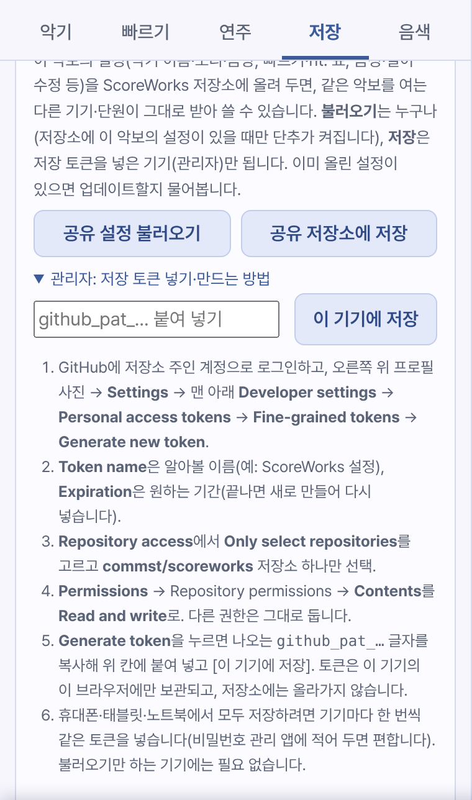
공유 설정 칸. '관리자: 저장 토큰 넣기·만드는 방법'을 펼친 모습
관리자: 저장 토큰 만들어 넣기 (기기마다 한 번)
GitHub(github.com)에 저장소 주인 계정으로 로그인 → 오른쪽 위 프로필 사진 → Settings → 왼쪽 맨 아래 Developer settings → Personal access tokens → Fine-grained tokens → Generate new token.
Token name: 알아볼 이름(예: ScoreWorks 설정). Expiration: 원하는 기간. 기간이 끝나면 새로 만들어 다시 넣습니다.
Repository access: Only select repositories → commst/scoreworks 하나만 선택.
Permissions → Repository permissions → Contents를 Read and write로. 다른 권한은 건드리지 않습니다.
Generate token을 누르면 github_pat_…로 시작하는 긴 글자가 한 번만 보입니다. 복사해 둡니다(비밀번호 관리 앱에 적어 두면 다른 기기에서 다시 쓰기 편합니다).
ScoreWorks 저장 → 공유 설정 → 관리자: 저장 토큰 넣기·만드는 방법을 펼쳐 칸에 붙여 넣고 이 기기에 저장.
토큰은 그 기기의 그 브라우저에만 보관됩니다. 휴대폰·태블릿·노트북에서 모두 올리려면 기기마다 한 번씩 같은 토큰을 넣습니다. 받기만 하는 기기에는 필요 없습니다.
브라우저 방문 기록·사이트 데이터를 지우거나 다른 브라우저를 쓰면 다시 넣어야 합니다. 설명 맨 아래의 붉은 이 기기에서 토큰 지우기로 그 기기에서 뺄 수 있습니다(지우기 전에 한 번 물어봅니다).
불러오기는 같은 PDF 파일이어야 바로 찾습니다. 같은 곡이라도 파일이 다르면(다시 만든 PDF 등) 제목·파일 이름이 같은 설정을 찾아 "같은 곡의 다른 파일로 올린 설정이 있습니다"라고 알려 주고, 받으면 맞는 줄의 설정만 적용합니다(음정·길이 수정은 빠집니다). 공유 설정 칸의 안내 글에 지금 찾은 파일 이름이 나옵니다.
토큰은 이 저장소의 파일 쓰기만 되므로 다른 저장소나 계정에는 영향이 없습니다. 그래도 남에게 보여 주지 말고, 새어 나갔다면 GitHub의 같은 화면에서 지우고(Delete) 새로 만드세요.
"저장 토큰이 맞지 않거나 기간이 끝났습니다" → 토큰을 새로 만들어 넣습니다. "이 토큰으로는 저장소에 쓸 수 없습니다" → 3·4번(저장소 선택, Contents 권한)을 확인합니다.
올린 직후 토큰이 없는 다른 기기에서는 몇 분 뒤에 보일 수 있습니다.
주의 휴대폰 브라우저는 오래 쓰지 않으면 저장 내용을 지우기도 합니다. 많이 고쳤다면 파일로 내보내 두세요. 자동 저장·자동 불러오기는 '이 악보의 설정'의 체크로 끌 수 있습니다.
14. 문제가 생겼을 때
이럴 때
이렇게 해 보세요
"악보 기호를 찾을 수 없습니다"
스캔하거나 사진으로 만든 PDF입니다. 악보 프로그램에서 PDF로 다시 저장하거나 MusicXML로 내보내 올리세요.
▶를 눌렀는데 "템포를 입력해 주세요"
빠르기 칸의 노란 BPM 칸을 채우세요(5장).
소리가 안 나요
악기 칸에서 켠 줄이 있는지, 음량이 0이 아닌지, 솔로가 다른 줄에 켜져 있지 않은지(위 노란 안내) 확인하세요. 휴대폰은 처음 한 번 재생 단추를 직접 눌러야 합니다.
악기 이름이 이상해요 / 소리가 다른 악기로 나와요
줄을 펼쳐 첫 단 그림으로 악기를 확인하고 '악기 이름' 칸에서 이름을 고치세요. 맞는 소리로 바꾸는 단추가 나옵니다. 소리만 바꾸려면 '악기 소리'에서 고르세요.
빠르기가 2배 빠르거나 느려요
♩=♪ 구간이면 방향 단추를, 아니면 기준 음표(♩/♩.)가 악보와 같은지 확인하세요.
음이 틀리게 들려요
그 마디를 ✎로 고치세요(8장). 옥타브만 다르면 줄의 '옥타브'를 바꾸세요.
반복이 이상해요
연주 칸의 '연주 순서'를 악보대로 직접 고치세요. 예: 1-16, 9-16, 17-32.
마디 번호가 악보와 달라요
안내 글에 처음 다른 곳이 나옵니다. 쉬는 악기를 숨긴 총보는 줄이 엇갈려 읽힐 수 있으니 마디맵과 악보를 비교해 보세요.
저장한 WAV가 zip이에요
압축을 풀면 wav가 나옵니다. 작은 파일이 좋으면 MP3를 고르세요.
"프로그램이 시작되지 않았습니다" / "프로그램을 시작하지 못했습니다: …"
브라우저(Safari·Chrome)에서 링크로 열었는지 확인하고 새로 고침하세요. 화면 맨 아래 판 번호가 최신인지도 보세요. 그래도 같으면 노란 칸의 문구(특히 '시작하지 못했습니다:' 뒤 오류 내용)를 캡처해 알려 주세요.
화면이 예전 모습이에요
새 판이 나오면 위에 [새로 고침] 안내가 뜹니다. 안 뜨면 브라우저에서 새로 고침하세요. 저장한 설정은 그대로 남습니다.
파일을 끌어다 놓았는데 안 돼요
[악보 파일] 창의 총보·악보 추가·파트보 상자 위에 놓으세요. PDF·MusicXML만 받습니다.
그래도 악보와 다르게 들리는 곳이 있으면 곡 이름과 마디 번호를 알려 주세요.
15. 단축키와 알아 둘 점
키
하는 일
스페이스바
재생·일시정지(입력 칸·단추에 초점이 있거나 창이 떠 있을 때는 동작하지 않음)
Esc
창·서랍·화면 가득 보기 닫기
Ctrl+Z
방금 한 음 수정 취소
←→
왼쪽 칸 탭에 초점이 있을 때 다른 칸으로
알아 둘 점
악보를 자동으로 읽기 때문에 빠르기·악기 이름·음표가 실제와 다르게 읽힐 수 있습니다. 재생 전에 줄 이름과 빠르기 표를 악보와 한 번 맞춰 보세요.
추성·퇴성·전성 같은 시김새와 글리산도는 악보 기호를 읽지 못해 소리로 나오지 않습니다.
음높이는 음자리표·조표·임시표로 읽습니다.
화면은 기기의 밝은·어두운 모드를 따릅니다.
새로 생긴 기능과 고친 점은 위 막대의 이력(업데이트 이력)에서 날짜별로 볼 수 있습니다. 항목을 누르면 자세한 내용이 펼쳐집니다.